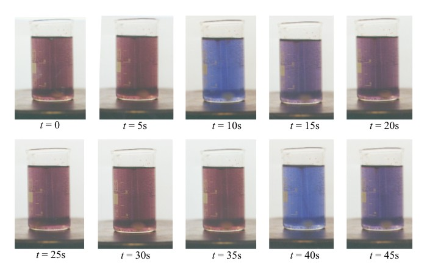

Hlavní strana
Náš projekt se zabývá rozpoznáváním číslic ve videozáznamu. Námi použitý videozáznam zachycuje displej digitálního voltmetru, který měří elektrický potenciál na elektrodě při Bělousově–Žabotínského reakci.
BZ reakce
Bělousova–žabotinskeho reakce je souhrnny nazev pro skupinu chemickych reakci, které vycházejí z původního pokusu provedeného Bělousem. Jedná se o první objevenou oscilační reakci, z toho důvodu je reakce vyznamna pro vyvoj chemie. Nejefektivnější varianta této reakce se provádí v petriho misce a při jejím průběhu vznikají na hladině tekutiny v misce barevné v case a prostoru promenlive vzory pripominajici struktury na motýlích křídlech. Existence reakce byla nekolik let po objevu odborniky odmitana.

Měřenou hodnotou je napětí mezi Časový průběh změn pH v reakční nádobě zprostředkovaný změnou elektrického potenciálu mezi měřící elektodou v nádobě a referenčí elektodou. Význam měřené hodnoty není pro tento úkol podstatný.
Náš úkol jsme si vymezili
- Za využití metod strojového učení zpracovat několik desítek minut trvající záznam displeje do formátu umožňujícího zkoumání jevu (tj. graf).
- Nástroje vytvořené v tomto projektu by měly být použitelné pro podobné zpracování videí podobnými technickými prostředky za srovnatelných světelných podmínek.
Pouzite nastroje
- Python 2.7
- PIL (Python Imaging Library)
- Weka 3.7
Novinky:
[20/05/2013]
Spuštìny webové stránky
[26/05/2013]
Interim report
Související odkazy:
WekaStránky předmětu